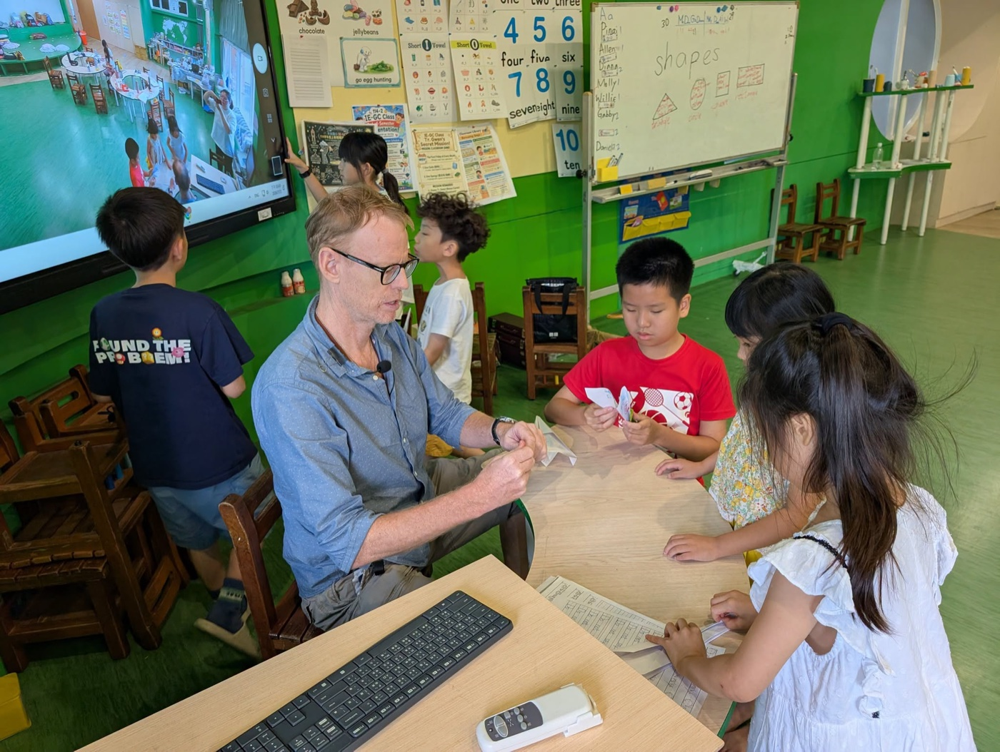
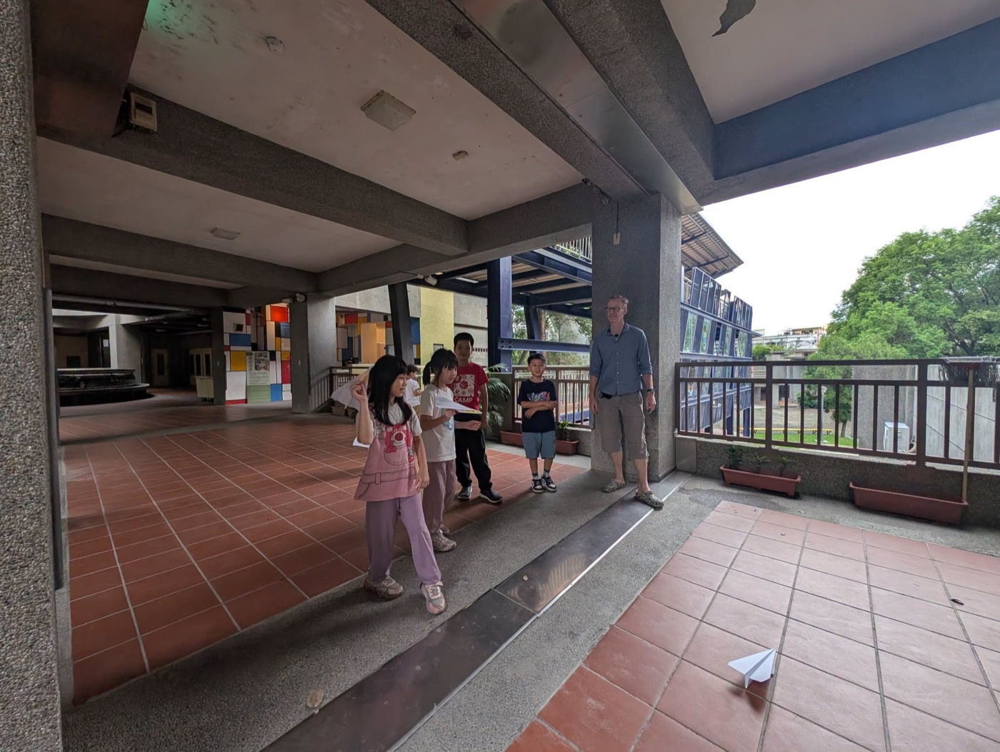
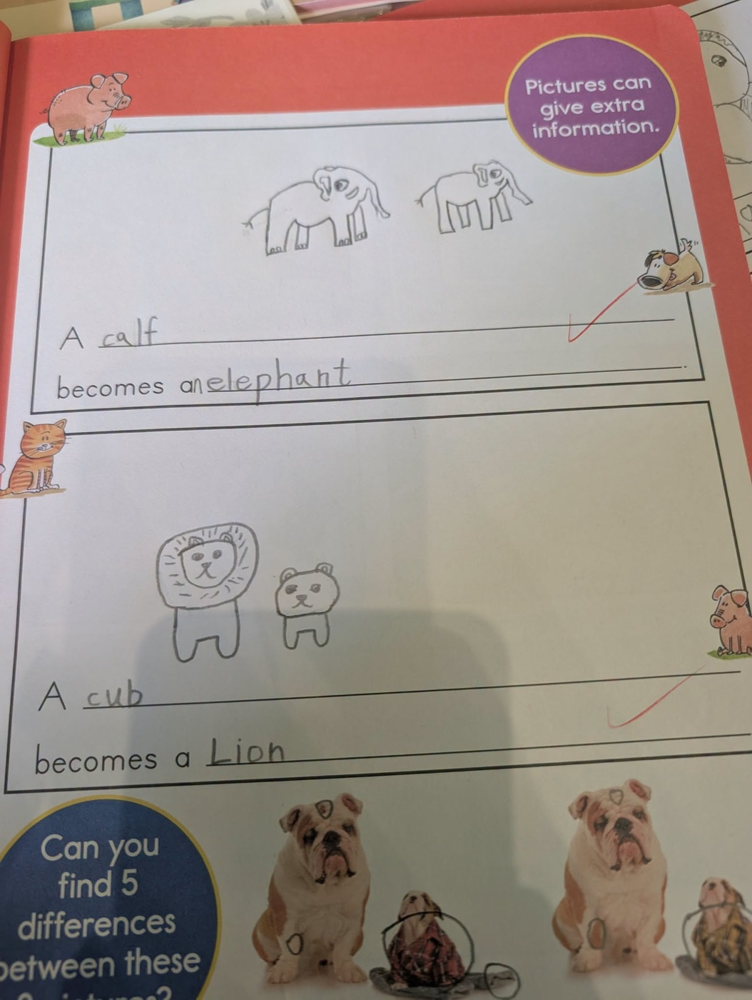
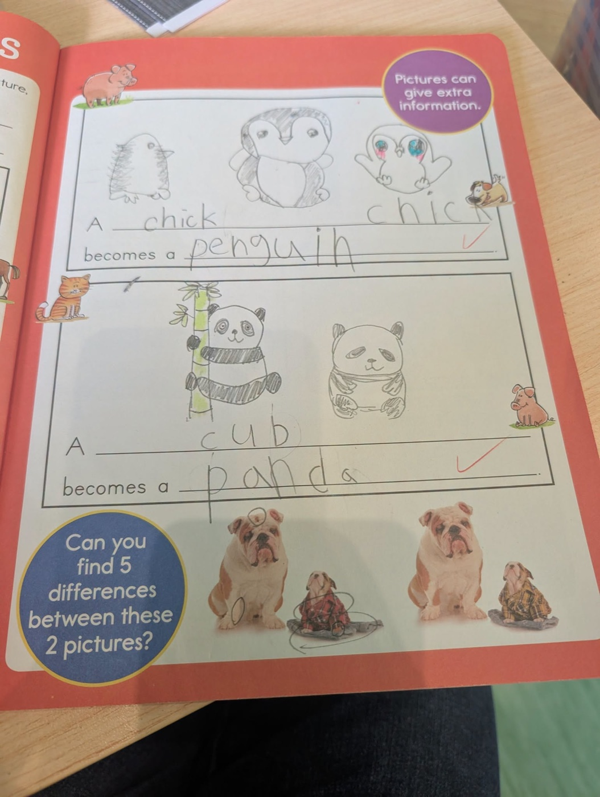

Week 2 of IE-GC Summer Camp was full of colour, creativity, and discovery! Building on the animal and adjective foundation from Week 1, children this week explored a fascinating new question: what are baby animals called? They read, wrote sentences, created art, and launched paper airplanes — all in English.
One of the highlights was discovering that many animal babies have their own special names. A baby owl is called an owlet. A baby elephant — just like a baby cow — is called a calf. And a baby lion or panda is called a cub. Students wrote these facts into their own workbooks, turning vocabulary into real English sentences they could understand and remember.




Here's a look at the week's highlights:
In the art room, Kevin guided students in creating beautiful sailboat mosaic paintings — tearing coloured paper into tiny pieces and arranging them into scenes of sea, sky, and sunshine. Every painting was unique, and every child felt the pride of finishing something beautiful with their own hands.
Then came the paper airplane challenge. Students folded, adjusted, aimed — and launched. Each flight was a tiny experiment. They adjusted the wings, tried a different angle, and cheered each other on. Story time with Gwen was the perfect close to each day: one more book, then one more, then one more. That's how English grows — one story, one sentence, one confident word at a time. 🌸
IE-GC Summer Camp 第二週，我們延續第一週的動物與形容詞主題，帶孩子們進一步透過閱讀、書寫、遊戲與創作，慢慢把英文從單字變成可以理解、可以使用的句子。
本週孩子們開始閱讀更多動物相關故事，也學習動物與牠們孩子的英文說法：🦉 owl → owlet、🐄 cow → calf、🦁 lion → cub、🐘 elephant → calf。孩子們不只是認識單字，也嘗試將學到的內容寫成句子，練習用英文描述動物成長與變化。
藝術課中，孩子們和 Kevin 老師一起完成美麗的帆船撕貼馬賽克畫。透過色彩、形狀與拼貼，孩子們在創作中展現自己的想像力，也讓英語主題學習多了更多動手操作的樂趣。本週也進行了紙飛機大賽，孩子們在比賽中觀察、調整、再嘗試，看著自己的紙飛機飛出去的那一刻，每個小小工程師都超投入！而在 Gwen 老師的說故事時間，孩子們更是一本接著一本，聽到欲罷不能，不斷期待下一個故事。
📚 Week 2 Learning Highlights
🦉 Animals & Their Babies｜認識動物寶寶的英文名稱
✍️ Sentence Writing｜把單字寫成句子：A calf becomes an elephant.
🎨 Sailboat Mosaic Art｜和 Kevin 老師一起完成帆船撕貼馬賽克畫
✈️ Paper Airplane Challenge｜人人都是小小工程師
📖 Story Time with Gwen｜欲罷不能的說故事時光
一點一滴累積的，不只是單字量，也是孩子敢聽、敢說、敢寫、敢嘗試的信心。🌱
Words About Animals, Art & Confidence英語學習角 · 動物、創作與自信相關的小單字
Six key words — tap 🔊 to listen, then try the conversation and quiz.
六個關鍵字，點 🔊 聽發音，再試試對話和小考。
情境：兩個同學聊起夏令營第二週學到的事。